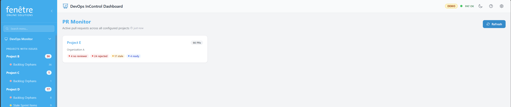

PR Monitor
The PR Monitor gives you a bird's-eye view of all active pull requests across your projects. Each project is shown as a card with coloured flag badges so you can spot problems at a glance.

PR Monitor overview with flag badges per project.
How to Use It
- Open PR Monitor from the sidebar.
- Each card shows a project name, the number of active PRs, and flag badges.
- Click a project card to see the full list of pull requests (see PR Details).
What the Flag Badges Mean
| Badge | Meaning |
|---|---|
| No reviewer | A PR has no reviewers assigned — someone needs to be added. |
| Rejected | A reviewer has rejected the PR — changes are needed. |
| Stale | A PR has had no activity (no comments, no code pushes) for the configured number of days. |
| Ready to approve | All required approvals are in place — the PR can be completed. |
| All clear | No flags — everything looks fine. |
What You Can Change
| Setting | Where to Find It |
|---|---|
| Which projects appear | Configuration — enable at least one PR check for a project. |
| Stale days threshold | Configuration — edit the project, find the Stale PR Check, and change the Stale days value. |
| Ignored reviewers | Configuration — edit the project, find the Unreviewed PR Check, and add names to Ignore reviewers. |
| Repository filter | Configuration — set a specific repository on any PR check to limit its scope. |
Tip
Draft pull requests are excluded from most flags — they are only shown for informational purposes.